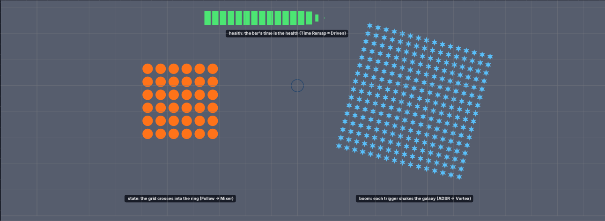
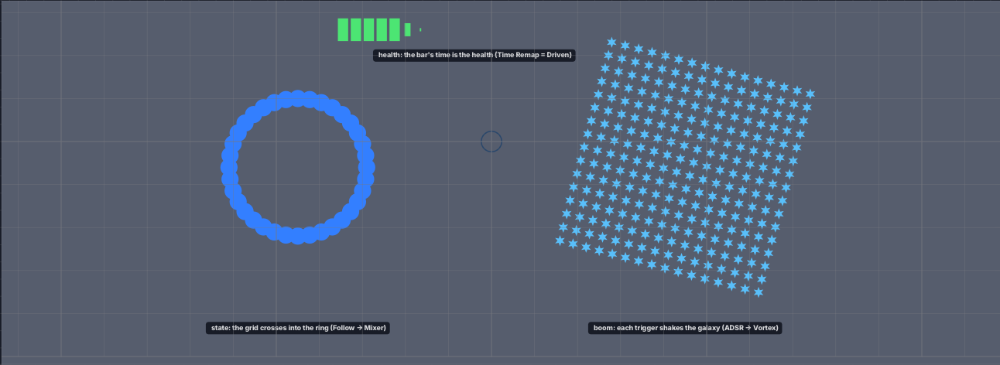

Até aqui o grafo só ouvia o relógio. Num jogo quem manda é o jogo: a vida do
herói, se ele está a correr ou parado, o golpe que acabou de levar. Agora o grafo tem
entradas: o cartão Input tem um nome (por exemplo vida), e
quem souber esse nome escreve nele — um componente num objecto, um script Luau, um
sinal do jogo. Enquanto ninguém escreve, manda o número do próprio cartão: é o seu
botão de teste.
| tipo do Input | o que ele dá ao grafo |
|---|---|
Number | um número (a vida de 0 a 1, a velocidade…) |
Toggle | sim ou não — 0 ou 1 (está a correr? está no chão?) |
Trigger | um disparo: 1 num instante só, depois 0 (levou um golpe, apanhou uma moeda) |
Color | uma cor (a cor da equipa) — pelas saídas r g b a |
Cole isto inteiro num terminal. Na primeira vez ele compila (alguns minutos); depois abre em segundos.

Input.No grafo, a fila de cima é a da barra. A barra é uma animação de 2 segundos (as peças
nascem uma a uma), mas o cartão Time Remap está no modo Driven: o tempo
dela não anda com o relógio — é a vida. Vida 0 é o início da animação, vida 1 é o fim.
Input que tem Name = vida, arraste
Value de 0 a 1.
Time Remap.
Mode = Driven, e a linha Position tem
um fio a chegar do Input: é a vida a escolher o instante. As linhas
Curve e Duration dizem como a vida vira tempo.A fila do meio é a da grelha. Um Mixer em Blend mistura uma
grelha e um anel; quem decide quanto de cada um é o estado, passado por um Follow que
o leva de 0 a 1 em 0,6 segundos (em vez de saltar).
Input com Name = estado, ligue
On.
On.
Follow, mude Mode para Spring e
ligue/desligue On outra vez.
Duration é o tempo da mola, Bounce o salto.Input com Name = time, mude a cor.
r g b do cartão estão
ligadas às linhas de cor do Tint.A fila de baixo é a da galáxia. O cartão Input com
Name = boom é um Trigger: um disparo. Ele acende um
ADSR (um envelope: sobe depressa, desce devagar), e o envelope mexe num
campo da simulação — a força do Vortex — e no tamanho das estrelas.
boom, clique em Fire. (Cada clique é um disparo.)
O que o jogo mandou fica gravado com a animação: voltar a fita mostra o que aconteceu, no instante em que aconteceu.
vida, ligue o estado e
clique Fire. Depois pare e arraste a fita para trás.
O cartão é o botão de teste. No jogo, quem escreve é um objecto, pelo componente
Motion Input.
Add → Empty) e, no
Inspector, carregue em + e escolha Motion Input.
Motion Input com Input,
Source e Value. Por baixo de Input, os nomes que o
grafo lê (boom, estado, time, vida).vida e ponha Value em 0,25.
Source.
Value = o número da linha; Color = uma cor;
Health = a vida do objecto, de 0 a 1 (ele precisa do componente
Health); Damage = um disparo cada vez que essa vida desce.
vida = 0,25, estado = 1 e
time azul (pela linha de comando, abaixo).| linha | cartão | o que faz |
|---|---|---|
Name | Input | o nome da entrada — quem escreve usa este nome |
Kind | Input | Number · Toggle ·
Trigger · Color |
Value · On · Fire · Color | Input | o botão de teste de cada tipo (vale enquanto ninguém escreve) |
Mode = Driven | Time Remap | o tempo da parte de cima
do grafo deixa de andar: é a Position (0 a 1) vezes Duration, mais
Offset, pela Curve |
Mode | Follow | Linear (chega em
Duration segundos) · Smooth (a meio caminho a cada
Duration) · Spring (uma mola; Bounce o salto) |
Input · Source · Value · Color |
Motion Input (Inspector) | o objecto que escreve, e o quê |
motion.set("vida", 0.3), motion.color("time", 0.2, 0.5, 1),
motion.fire("boom").boom (por exemplo de um
ph2d.emit("boom")) dispara o Trigger com esse nome.Time Remap, desenhe uma Curve que
sobe devagar e acelera no fim: a vida baixa passa a encher pouco a barra.(preenchido com a medição do ciclo)
| o que você vê | o que reportar |
|---|---|
a barra não segue o Value | o número e uma foto |
| a grelha salta de uma vez para o anel | o Mode do Follow |
o Fire não mexe na galáxia | se o relógio estava a andar |
| ao voltar a fita a cena faz outra coisa | o que fez e o que devia ter feito |
o Motion Input não mexe na barra | o Input e o
Source escolhidos |